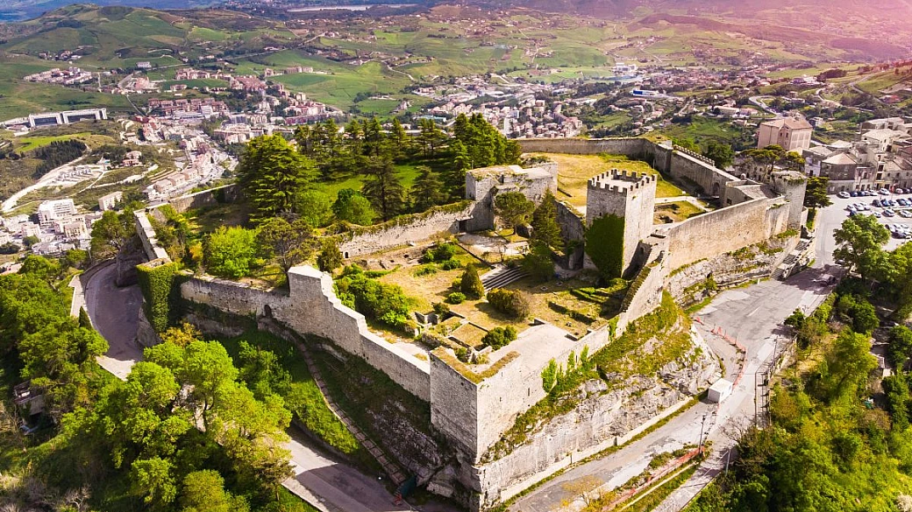
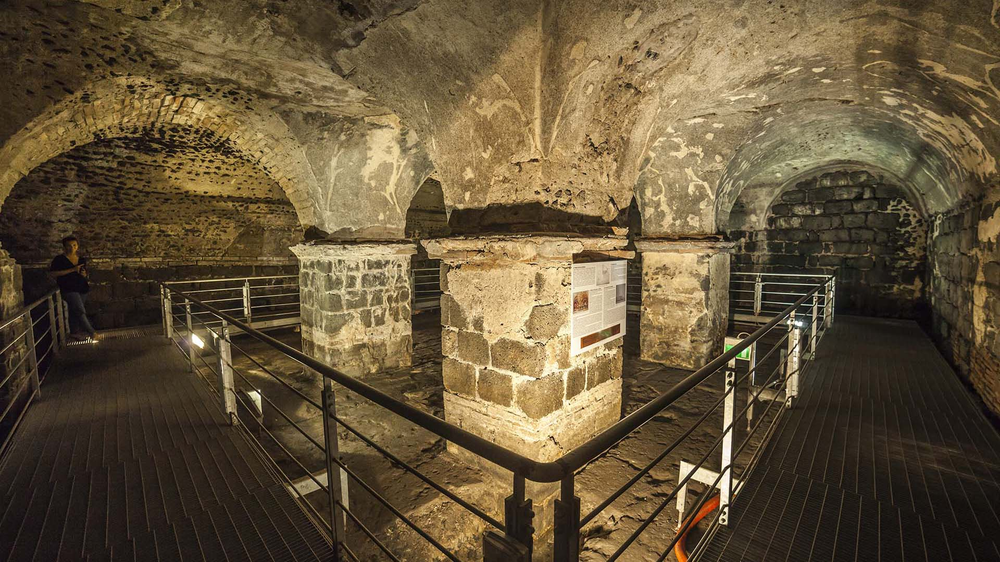
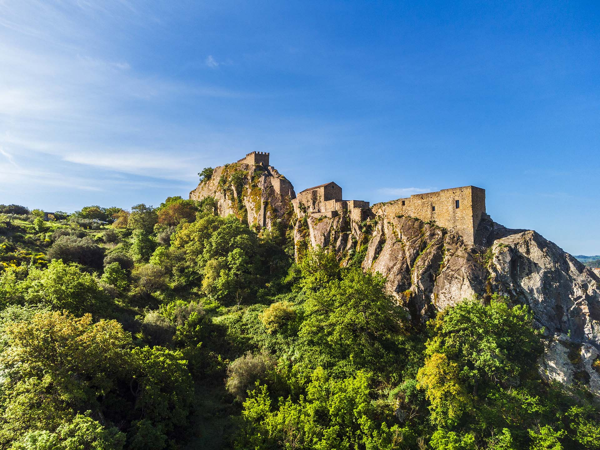

Mentre la costa ribolle, sull'Etna ti accoglie il primo brivido d’aria fresca. Nel silenzio rotto solo dal vento, la pietra lavica sfuma dal grigio al viola fino al blu cobalto, mentre a 2000 metri la Via Lattea si fa così nitida da sembrare tattile. Ad agosto, il cielo si accende per le Perseidi in un rito mistico: se il vulcano è in attività, il rosso dei lapilli danza con il bianco delle meteore in un incontro primordiale tra il fuoco della terra e quello del cielo.
Al Teatro Massimo di Palermo, la magnificenza dell'architettura nasconde un’anima inquieta che abita le ombre del palcoscenico. Tra i velluti del teatro si aggira la "Monachella", una suora rimasta senza tomba dopo la demolizione della sua chiesa. Se inciampi sul primo gradino, non è un caso: è il suo dispettoso benvenuto in un luogo dove l'opera incontra il mistero.
Dal belvedere di Tindari, i Laghetti di Marinello appaiono come una lingua di sabbia bianca che muta col mare. La leggenda narra di una madre scettica che vide la figlia cadere dal precipizio: la Madonna Nera fece ritirare le acque, creando istantaneamente la sabbia soffice che salvò la piccola. Per la scienza sono correnti marine; per noi, è il segno vivo del miracolo.

Visita il Castello di Lombardia, ma cerca il punto dove il vento soffia più forte. Enna è la città del mito di Proserpina; Enna non è solo una città, è la dimora del mito: è qui che Plutone squarciò la terra per rapire Proserpina, ed è qui che senti davvero la connessione tra la terra e il cielo. Aspetta che la nebbia avvolga il castello. In quegli istanti, le torri sembrano fluttuare nel vuoto e il confine tra realtà e leggenda svanisce del tutto.

Non guardare Isola Bella solo dall'alto, per capire davvero perché la chiamano la "Perla del Mediterraneo", devi scendere. Scendi la scalinata e, se la marea è bassa, cammina sul sottile istmo di sassi che la collega alla terraferma. È un confine magico tra terra e mare. Ma la vera iniziazione avviene quando metti la maschera e lasci che il mondo di sopra svanisca. Fare snorkeling qui non è solo guardare i pesci, è scivolare in un tempio sommerso di luce e silenzio.

Se Catania ha un’anima scura come la sua pietra lavica, le Terme Achilliane ne sono il segreto meglio custodito, proprio sotto i piedi di chi passeggia ignaro in Piazza del Duomo. Qui scorre ancora l'Amenano che "cammina" tra le antiche strutture romane e fa capire perché Catania è definita una città resiliente: è stata sepolta dalla lava e dalle ricostruzioni, ma il suo cuore pulsa ancora sottoterra.

Sperlinga non è un castello come tutti gli altri. È una fortezza che sembra nascere dalla montagna stessa. Il borgo rupestre ai piedi del castello, dove le persone hanno vissuto nelle grotte fino agli anni '60. Oggi tra attrezzi agricoli e vecchi telai, si respira l'umiltà e la resilienza della civiltà contadina di un tempo, rendendo Sperlinga un luogo dove la storia non si legge sui libri, ma si tocca con mano nelle pareti fredde della montagna.